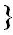

LIST OF PLATES
GLOVES
| No. | PLATE | OWNER | PAGE | ||
| GLOVES OF HENRY VIII | Alfred de la Fontaine, Esgr. | Frontispiece | |||
| I. | BISHOP WYKEHAM�S GLOVE | New College, Oxford | 7 | ||
| II. | GLOVES OF KING HENRY VI | Free Public Museums, Liverpool | 8 | ||
| III. |
|
ARMOURED LEATHER GLOVE | Tower of London |
 |
9 |
| SCALED LEATHER GLOVE | " " | ||||
| A CHAIN MAIL GLOVE | W. H. Fenton, Esqr. | ||||
| IV. | CHAIN MAIL AND PLATE GLOVE | Castle Museum, Norwich | 11 | ||
| V. | A PAIR OF SCALED LEATHER GLOVES | The Author. | 12 | ||
| VI. | STEEL MITTEN GAUNTLET | Tower of London | 13 | ||
| VII. |
|
HENRY VIII GAUNTLET | " " | 14 | |
| STEEL MITTENS | " " | ||||
| VIII. | SIR ANTHONY DENNY�S GLOVE | Victoria and Albert Museum, S. Kensington | 15 | ||
| IX. | HAWKING GLOVE OF HENRY VIII | Ashmolean Museum, Oxford | 17 | ||
| X. | WHITE GLOVES | Victoria and Albert Museum, S. Kensington | 18 | ||
| XI. | A LADY�S GLOVE | John Hallam, Esqr.. | 19 | ||
| XII. | LADY SHERINGTON�S GLOVES | Mrs. B. Morrell | 20 | ||
| XIII. | MITTENS | Victoria and Albert Museum, S. Kensington | 21 | ||
| XIV. | QUEEN ELIZABETH�S GLOVES AT OXFORD | Ashmolean Museum, Oxford | 22 | ||
| XV. | AN ELIZABETHAN GLOVE | William Henry Taylor, Esqr. | 23 | ||
| XVI. | LORD DARNLEY�S CUFF | W. Murray Threipland, Esqr. | 24 | ||
| XVII. | GLOVE OF MARY QUEEN OF SCOTS | Saffron Walden Museum | 25 | ||
| XVIII. | SHAKESPEARE�S GLOVES | Dr. Horace Howard Furness | 29 | ||
| XIX. | GLOVES OF KING JAMES I | Alfred de la Fontaine, Esqr. | 31 | ||
| XX. | EARLY SEVENTEENTH-CENTURY GLOVES | South Kensington Museum | 32 | ||
| XXI. | GLOVES OF KING CHARLES I | The Author | 33 | ||
| XXII. | GLOVES OF KING CHARLES I | A. Clark-Kennedy, Esqr. | 35 | ||
| XXIII. | GLOVE OF KING CHARLES I | V. F. Bennett Stanford, Esqr. | 36 | ||
| XXIV. |
|
GLOVE OF KING CHARLES II | Mrs. Speid | 37 | |
| A SEVENTEENTH-CENTURY GLOVE | Captain Still | ||||
| A GLOVE, SEVENTEENTH CENTURY | David Seton, Esqr. | ||||
| XXV. | THE NASEBY GLOVES | The Author | 39 | ||
| XXVI. | GLOVES OF OLIVER CROMWELL | The Author | 40 | ||
| XXVII. | |||||
| XXVIII. | GLOVES OF THE LORD PROTECTOR | Mrs. A. H. Simpson-Carson | 43 | ||
| XXIX. | GLOVES OF CHARLES II | A. Clark-Kennedy, Esqr. | 44 | ||
| XXX. | A PAIR OF WHITE GLOVES | Seymour Lucas, Esqr., R.A. | 46 | ||
| XXXI. | BROWN GLOVES | " " | 47 | ||
| XXXII. | A SPANISH GLOVE. | Victoria and Albert Museum, S. Kensington | 48 | ||
| XXXIII. | A LADY�S GLOVES. | The Author | 49 | ||
| XXXIV. | WHITE GLOVES | " " | 50 | ||
| XXXV. | A CAVALIER�S GLOVE | A. S. Field, Esqr. | 51 | ||
| XXXVI. | A PAIR OF ENGLISH GLOVES | Victoria and Albert Museum, S. Kensington | 52 | ||
| XXXVII. | A PAIR OF BROWN GLOVES | The Author | 53 | ||
| XXXVIII |
|
A GLOVE | Seymour Lucas, Esqr., R.A. | 54 | |
| THE PASTON HALL GLOVE | Castle Museum, Norwich | ||||
| A LADY�S GLOVE | Seymour Lucas, Esqr., R.A. | ||||
| XXXIX. | A PAIR OF SHORT GLOVES | W. Cole-Plowright, Esqr. | 56 | ||
| XL. | A LADY�S GLOVE, OXFORD | Ashmolean Museum, Oxford | 57 | ||
| XLI. | QUEEN ANNE�S GLOVES, OXFORD | " " | 58 | ||
| XLII. | A CAVALIER�S GLOVES | Edinburgh Museum of Science and Art | 59 | ||
| XLIII. | A PAIR OF SEVENTEENTH-CENTURY GLOVES | The Author | 60 | ||
| XLIV. | A PAIR OF LADY�S GLOVES | Edinburgh Museum of Science and Art | 61 | ||
| XLV. |
|
COLONEL DUCKETT�S GLOVES | The Author | 62 | |
| A PAIR OF LEATHER MITTENS | " " | ||||
| XLVI. | A PAIR OF MITTENS | Edinburgh Museum of Science and Art | 63 |